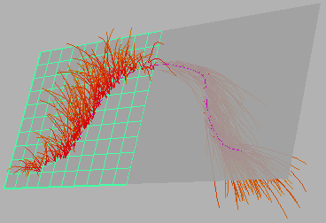

在可绘制对象上绘制笔划时，管相对于曲面法线生长。您可能会发现自己正在具有反转法线的曲面上进行绘制（例如，如果正在模型一边是另一边镜像的模型上进行绘制），在这种情况下管将按相反方向生长。

若要解决此问题，请创建一个热键。您可使用此热键在曲面上进行绘制之前切换其“反向”(Opposite)标志。开始笔划绘制后，为曲面切换标志不会对现有笔划产生任何影响。
为切换反向(Opposite)标志创建热键
- 选择。
- 在“为以下项编辑热键”(Edit Hotkeys For)旁边，选择“其他项目”(Other items)。
- 在“其他项目”(Other items)列表中，单击“Paint Effects”，然后向下滚动并单击“切换选定形状的反向标志”(Toggle Opposite Flag of Selected Shapes)。
正确选择该命令后，您会在表行的右侧看到一个闪烁的光标，以备您随时输入可用的热键组合。
- 按 Ctrl 键、Alt 键、Shift 键或这些键的任意组合，“热键编辑器”(Hotkey Editor)键盘贴图将以灰色显示未指定的键。
- 输入所选组合（建议：Alt+O）。在表中的条目旁边，可以使用下拉菜单指定切换是在“按下时”(On Press)（默认）还是“释放时”(On Release)起作用。
- 单击“保存并关闭”(Save and Close)。